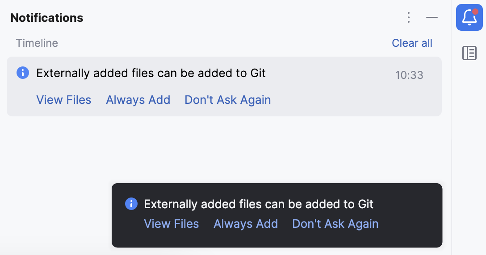
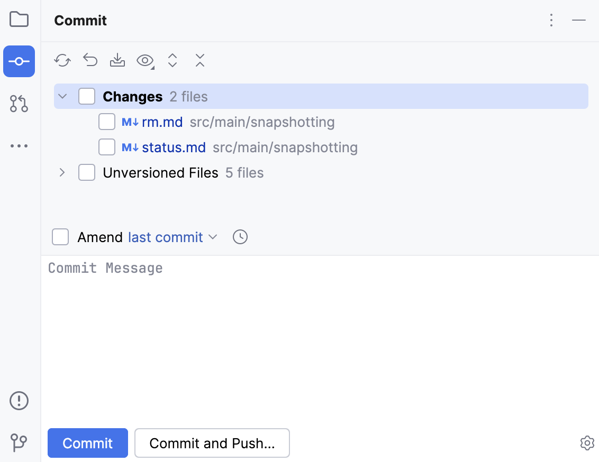
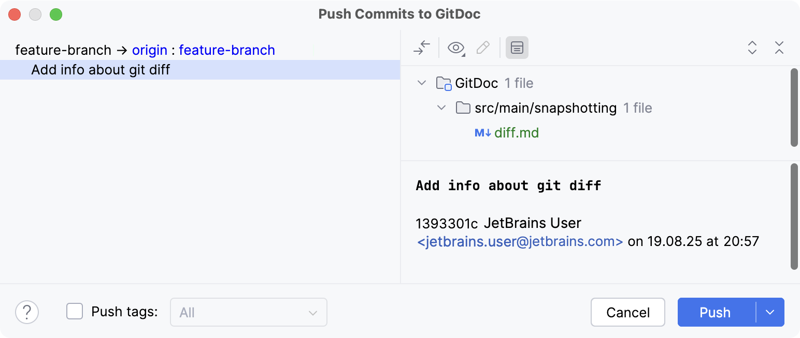
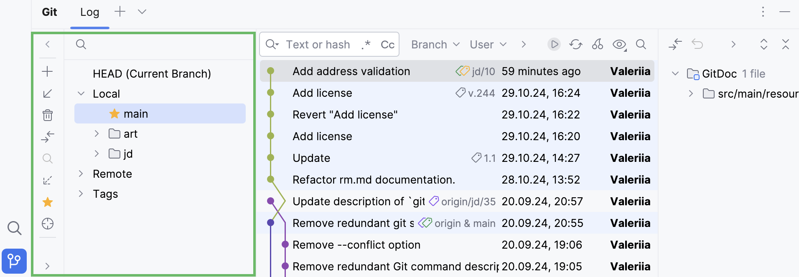

GitHub
GitHub es una plataforma web que permite alojar repositorios Git en la nube y añade, además, una capa de herramientas pensadas para la colaboración entre desarrolladores. Desde su lanzamiento en 2008, se ha convertido en el servicio de alojamiento de código más popular del mundo, y hoy aloja millones de proyectos, tanto privados como de código abierto. Es, en la práctica, el lugar donde vive buena parte del software que usamos a diario.
Es muy importante no confundir Git con GitHub, ya que no son lo mismo, y mezclarlos es uno de los errores conceptuales más frecuentes al empezar. Git es el sistema de control de versiones: la herramienta que se ejecuta en nuestro ordenador, que registra los cambios del proyecto y que funciona incluso sin conexión a Internet. GitHub, en cambio, es un servicio web: un lugar remoto donde se alojan copias de los repositorios Git y se ofrece una interfaz para gestionarlos, compartirlos y colaborar sobre ellos. Dicho de otro modo: Git funciona perfectamente sin GitHub (podemos usarlo en local durante toda la vida de un proyecto), mientras que GitHub no existiría sin Git, porque por debajo no es más que un montón de repositorios Git con una capa social y de colaboración encima.
Esta distinción tiene una consecuencia práctica que conviene tener clara: cuando trabajamos con Git en local, los cambios se guardan en nuestra máquina; cuando queremos que esos cambios viajen a GitHub, hace falta una operación adicional, subirlos. Y cuando queremos traernos lo que otros han subido, hace falta la operación inversa, descargarlos. Git y GitHub se comunican, pero son dos mundos que hay que sincronizar de forma consciente.
La ventaja de usar GitHub (o un servicio equivalente) es doble. Por un lado, actúa como copia de seguridad remota del proyecto: si se estropea nuestro equipo, se pierde o se roba, el código no desaparece, porque está en la nube. Por otro, y esto es lo más importante, facilita el trabajo en equipo: permite que varios desarrolladores compartan un mismo repositorio, sincronicen sus cambios y colaboren de forma ordenada, sin pisarse los unos a los otros. Es esa segunda ventaja la que ha convertido a GitHub en algo más que un simple almacén de archivos.
Existen otras plataformas que ofrecen funcionalidades parecidas y que merecen conocerse, como GitLab o Bitbucket. Todas ellas se construyen también sobre Git, así que lo que aprendamos aquí es transferible: cambiar de plataforma es cuestión de adaptarse a una interfaz distinta, no de aprender un sistema nuevo.
Crear una cuenta
Para empezar a usar GitHub, lo primero es crear una cuenta en github.com. El proceso es muy sencillo: solo hay que indicar un nombre de usuario, un correo electrónico y una contraseña. El nombre de usuario es público y formará parte de las direcciones de nuestros repositorios (por ejemplo, https://github.com/mi-usuario/mi-proyecto), así que conviene elegirlo con cuidado, pensando que será nuestra identidad en la plataforma.
GitHub ofrece un plan gratuito que es más que suficiente para empezar, e incluso para la mayoría de proyectos profesionales: permite crear repositorios públicos y privados ilimitados y colaborar con un número ilimitado de personas. Los planes de pago añaden funciones avanzadas pensadas sobre todo para empresas y organizaciones grandes, pero no son necesarios para el trabajo individual ni para los proyectos de clase.
Como ya se comentó al hablar de la configuración de Git, es muy recomendable que el correo que usemos en GitHub coincida con el configurado en git config --global user.email, para que GitHub asocie correctamente nuestros commits con nuestra cuenta. Si los correos no coinciden, los cambios aparecerán en el repositorio, pero no se vincularán a nuestro perfil, y se perderá parte de la trazabilidad que hace valioso el historial.
Crear un repositorio en GitHub
Una vez dentro de GitHub, crear un repositorio es muy sencillo. Se pulsa el botón "New repository" (o el símbolo + de la esquina superior derecha) y se rellena un formulario con los siguientes campos:
- Nombre del repositorio: el nombre que identificará al proyecto (por ejemplo,
mi-primera-app). Conviene que sea descriptivo y que no contenga espacios ni caracteres raros. - Descripción (opcional): un breve texto explicando de qué trata el proyecto. Ayuda a que otros entiendan de qué va antes de entrar.
- Visibilidad: puede ser Public (cualquier persona puede verlo) o Private (solo nosotros y los colaboradores que invitemos). El código que forma parte de un proyecto abierto suele ser público; el de un proyecto interno o con datos sensibles, privado.
- Opciones de inicialización (opcionales): GitHub puede crear automáticamente un archivo
README, un.gitignorey una licencia. Si el repositorio ya existe en local, conviene no marcar estas opciones, para evitar conflictos al conectarlo (GitHub crearía archivos que no están en nuestra copia local y habría que fusionarlos antes de empezar).
Al finalizar, GitHub muestra la página del repositorio y, en ella, la URL que nos servirá para conectarlo con nuestro repositorio local. Esta URL tiene la forma:
Esa dirección es la que usaremos una y otra vez como referencia al repositorio remoto, así que merece la pena tenerla a mano.
Conectar el repositorio local con GitHub
Una vez que tenemos el repositorio local y el remoto, hay que vincularlos, es decir, decirle a nuestro Git local dónde está su copia en la nube. Para ello, se añade una referencia al repositorio remoto, denominada remote, que por convención se suele llamar origin:
Un remote no es más que un "nombre corto" que asociamos a la URL del repositorio remoto, para no tener que escribir la dirección completa cada vez. El nombre origin es arbitrario (podría ser cualquier otro), pero es el que usa todo el mundo por convención, y el que Git asigna automáticamente cuando se clona un repositorio. Podemos comprobar los remotes configurados con:
Ese comando es útil para confirmar que la vinculación se ha hecho bien y para recordar a qué dirección apunta cada nombre.
Autenticación: HTTPS o SSH
Al comunicarse con GitHub, Git necesita autenticarse para saber quién somos y asegurarse de que tenemos permiso para hacer lo que pretendemos. Existen dos formas principales de hacerlo:
- HTTPS: es la más sencilla para empezar. Al hacer la primera operación, GitHub pedirá usuario y contraseña. Desde 2021, en lugar de la contraseña de la cuenta se utiliza un token de acceso personal (Personal Access Token), que se genera desde la configuración de GitHub. Es la opción recomendada para empezar, porque no requiere configuración previa.
- SSH: se basa en un par de claves (una pública y otra privada). Es más cómoda a la larga, porque no hay que introducir credenciales cada vez, pero requiere una configuración previa algo más compleja: generar las claves y subir la pública a GitHub. Es la opción que suelen acabar usando los desarrolladores que trabajan continuamente con Git.
Enviar y obtener cambios
Una vez vinculado el repositorio local con el remoto, el flujo de trabajo habitual en equipo consiste en enviar y recibir cambios continuamente, de manera que el repositorio remoto actúe como punto de encuentro. Estas dos operaciones, subir y bajar, son el latido del trabajo colaborativo.
Enviar cambios: git push
Para enviar los commits locales al repositorio remoto se usa git push:
La opción -u (abreviatura de --set-upstream) asocia la rama local main con su rama correspondiente en el remoto. De esta forma, en las siguientes ocasiones bastará con escribir simplemente git push, sin tener que volver a indicar el destino. Es un paso que solo hace falta hacer la primera vez. Tras un push, los cambios dejan de vivir solo en nuestro ordenador y pasan a estar disponibles para todo el equipo (o para el mundo, si el repositorio es público).
Obtener cambios: git pull
Para obtener los cambios que otros han subido al repositorio remoto e integrarlos en nuestra copia local, se usa git pull:
En realidad, git pull es la combinación de dos operaciones que conviene conocer por separado:
git fetch: descarga los cambios del repositorio remoto, pero sin fusionarlos con nuestro trabajo local. Nos permite "echar un vistazo" a lo que han hecho los demás sin alterar nada de lo nuestro.git merge: fusiona los cambios descargados con nuestra rama local. Es aquí, potencialmente, donde pueden aparecer conflictos si hemos tocado las mismas líneas que otros.
Por tanto, git pull equivale a hacer un git fetch seguido de un git merge. En el día a día lo más normal es usar directamente git pull, ya que normalmente queremos integrar los cambios remotos de inmediato. Pero saber que por debajo hay un fetch y un merge ayuda a entender qué está pasando cuando aparecen conflictos.
flowchart LR
A["Repositorio local"] -->|"git push"| B["Repositorio remoto<br/>(GitHub)"]
B -->|"git pull"| AClonar un repositorio
Existe una segunda forma de obtener un repositorio, distinta de la que vimos con git init. Si el repositorio ya existe en GitHub (por ejemplo, un proyecto de otra persona, o uno propio en un equipo distinto), podemos descargar una copia completa con git clone:
git clone descarga todo el repositorio, es decir, los archivos, pero también todo el historial de commits y todas las ramas, y lo deja listo para trabajar en local. Además, configura automáticamente el remote origin, de modo que el repositorio clonado queda ya vinculado a GitHub y podemos empezar a usar git push y git pull directamente, sin tener que configurar nada más. Esta es la forma habitual de empezar a trabajar en un proyecto ya existente, tanto propio como ajeno.
Trabajo en equipo con GitHub
Más allá de alojar código, el verdadero valor de GitHub está en sus herramientas de colaboración. Estas herramientas son las que permiten que un proyecto con decenas o cientos de colaboradores no se convierta en un caos, y entenderlas es lo que distingue a un usuario que solo sabe "subir archivos" de alguien que sabe trabajar en equipo.
Issues: gestión de incidencias y tareas
Los issues son una especie de "tickets" o incidencias que se registran en el repositorio. Sirven para anotar tareas pendientes, errores detectados o ideas de mejora, y funcionan como una lista de trabajo compartida y pública. Por ejemplo, alguien puede abrir un issue titulado "La aplicación se cierra al pulsar el botón de guardar", describiendo con detalle cómo reproducir el problema. A partir de ahí, el equipo puede comentar, etiquetar, asignar la tarea a una persona concreta y hacerle seguimiento hasta que se resuelva. Cuando el problema se arregla, el issue se cierra y queda registrado que aquello se atendió.
La gran ventaja de los issues es que convierten conversaciones dispersas (correos, mensajes, comentarios de pasillo) en un registro ordenado y trazable. Cualquiera puede consultar qué se ha pedido, qué se ha hecho y qué falta, sin depender de que una persona lo recuerde.
Pull requests: revisión de código
Un pull request (a menudo abreviado como PR) es el mecanismo que usa GitHub para proponer cambios a un repositorio, y es la pieza central del trabajo en equipo moderno. Su función va mucho más allá de subir código: incorpora un proceso de revisión de código (code review) antes de que los cambios se integren en la rama principal.
El flujo de trabajo más habitual con pull requests es el siguiente:
- Se clona el repositorio (
git clone). - Se crea una rama para la nueva funcionalidad o corrección (
git switch -c nueva-funcionalidad). - Se realizan los cambios y se confirman (
git addygit commit). - Se sube la rama a GitHub (
git push). - Se abre un pull request desde la página de GitHub, describiendo qué se ha hecho y por qué.
- Los demás miembros revisan el código, hacen comentarios y, si todo está correcto, aprueban y fusionan (merge) la rama con la principal.
La gracia del pull request es ese paso de revisión: antes de que los cambios lleguen al código estable, otras personas los leen, los comentan y proponen mejoras. De esta forma, los errores se detectan antes y la calidad del proyecto mejora de forma colectiva. Además, el pull request deja un registro de la discusión: se puede ver por qué se tomó una decisión, quién la aprobó y qué se ajustó. Incluso trabajando en solitario, es una buena práctica abrir pull requests para revisar el propio trabajo con perspectiva.
Forks: contribución abierta
Un fork es una copia de un repositorio de otro usuario en nuestra propia cuenta de GitHub. Se utiliza, sobre todo, para contribuir a proyectos de código abierto que no nos pertenecen y en los que no tenemos permiso de escritura directa. El proceso es sencillo: se hace fork del proyecto original, lo que crea una copia bajo nuestro control; se trabaja sobre esa copia; y, cuando los cambios están listos, se envía un pull request al repositorio original, proponiendo que incorporen nuestras mejoras. Es la forma en la que miles de personas contribuyen a proyectos que nunca podrían modificar directamente, y una de las claves del éxito del software libre.
README y .gitignore
Además del código, todo buen repositorio debería incluir dos archivos especiales que aportan mucho valor y que son, en cierto modo, la tarjeta de presentación del proyecto.
README.md
El archivo README.md es la "portada" del proyecto. Está escrito en Markdown y GitHub lo muestra automáticamente en la página principal del repositorio, de manera que es lo primero que ve cualquiera que llegue. En él se suele incluir:
- Qué hace el proyecto.
- Cómo instalarlo y ejecutarlo.
- Ejemplos de uso.
- Cómo colaborar.
- La licencia del proyecto.
Un buen README es la diferencia entre un proyecto que cualquiera puede entender y usar y otro que nadie se atreve a tocar. Es, además, una de las primeras cosas que mira cualquier persona que llega a un repositorio, así que dedicarle un rato es una inversión que siempre se recupera.
.gitignore
El archivo .gitignore contiene la lista de archivos y carpetas que Git debe ignorar, es decir, que no debe versionar. Es imprescindible en cualquier proyecto, porque hay multitud de archivos que no tiene sentido guardar en el repositorio:
- Archivos compilados o generados automáticamente (
.class,target/,dist/). - Dependencias que se pueden descargar (
node_modules/). - Archivos de configuración específicos de cada equipo (como
.idea/de IntelliJ). - Archivos que contienen credenciales, contraseñas o claves (
.env,config.php...).
Un ejemplo de .gitignore para un proyecto Java podría ser:
# Archivos compilados
*.class
target/
# Archivos de configuración de IntelliJ
*.iml
.idea/
# Archivos del sistema
.DS_Store
# Credenciales
.env
Nunca versiones credenciales
Es un error muy grave (y lamentablemente frecuente) subir a un repositorio archivos que contienen contraseñas, claves API o secretos. Una vez publicado algo en Internet, borrarlo no garantiza que no haya quedado copiado por terceros. Conviene añadir siempre estos archivos al .gitignore antes del primer commit.
Resumen de comandos
| Comando | Descripción |
|---|---|
git clone <url> |
Descarga una copia completa de un repositorio |
git remote add origin <url> |
Vincula el repositorio local con el remoto |
git remote -v |
Muestra los repositorios remotos configurados |
git push |
Envía los commits al repositorio remoto |
git push -u origin main |
Primera subida, asociando la rama local con la remota |
git pull |
Obtiene e integra los cambios del repositorio remoto |
git fetch |
Descarga los cambios remotos sin fusionarlos |
Control de versiones integrado en IntelliJ IDEA
Git se maneja perfectamente desde la terminal, pero IntelliJ IDEA trae el control de versiones integrado en la propia interfaz, de forma que buena parte del trabajo se puede hacer sin escribir un solo comando. La ventaja no es solo la comodidad: al vivir dentro del IDE, Git conoce el estado de cada archivo y lo refleja con señales visuales que ayudan a no perder de vista qué se ha tocado y qué queda pendiente de confirmar. Para quien está empezando, esa traducción visual de los conceptos de Git resulta especialmente valiosa, porque convierte algo abstracto en algo que se ve.
Activación del sistema de control de versiones
Para empezar, hay que decirle al IDE que use Git en el proyecto. La ruta clásica es VCS → Enable Version Control Integration..., en el menú superior; en versiones recientes aparece también como Git → Create Git Repository. En ambos casos, el paso siguiente es seleccionar Git como motor de control de versiones. Es el equivalente gráfico a ejecutar git init: a partir de ese momento, el proyecto pasa a tener historial.
A partir de ese momento, IntelliJ marca el estado de los archivos directamente en el árbol del proyecto mediante colores, y aquí merece la pena detenerse, porque esos colores son la traducción visual exacta de los estados de Git que estudiamos en el tema anterior:
- El rojo identifica los archivos que aún no están siendo rastreados, es decir, los untracked: existen en el proyecto, pero Git no los conoce todavía.
- El verde señala los que ya se han añadido a la zona de preparación, los staged: están listos para el próximo commit.
- El azul corresponde a los archivos que han sido modificados respecto a la última versión confirmada, los modified: han cambiado, pero sus cambios aún no se han preparado.
Dicho de otro modo, ese código de colores es un git status permanente a la vista, sin necesidad de escribir nada en la terminal. Cuando trabajamos en IntelliJ, basta con mirar el árbol del proyecto para saber en qué estado está cada archivo.

Preparación y confirmación visual (Staging y Commit)
Con el proyecto ya bajo control de versiones, el siguiente paso es confirmar los cambios. IntelliJ concentra esa tarea en el panel lateral Commit, que se abre con el atajo Alt + 0 o pulsando la pestaña vertical Commit. Ese panel es la representación gráfica del flujo de tres áreas que veíamos en la terminal.
Dentro de ese panel, la zona de preparación se gestiona con casillas de verificación. Marcar la casilla de un archivo equivale, ni más ni menos, a hacer un git add sobre él, y desmarcarla equivale a sacarlo de la zona de preparación. La diferencia respecto a la terminal es que aquí se ve de un vistazo qué está preparado y qué no, y que se puede seleccionar con el ratón sin escribir nombres de archivo. Esa selección fina es la que permite confirmar solo una parte de los cambios y dejar el resto para más adelante, exactamente igual que se hacía con git add archivo uno a uno, pero mucho más cómodo.
Una vez elegidos los archivos, queda redactar el mensaje en el cuadro de texto habilitado para ello. Ese mensaje es el que acompañará al commit en el historial, así que conviene cuidarlo tanto como se cuidaría en la terminal. El botón principal ofrece dos caminos que conviene no confundir:
- Commit: guarda los cambios solo en el repositorio local. Es el equivalente a
git commit, y el trabajo queda registrado en el historial de nuestro ordenador, pero todavía no ha viajado a GitHub. - Commit and Push...: además de guardar en local, sincroniza con la nube, subiendo los cambios al repositorio remoto. Es el equivalente a un
git commitseguido de ungit push, todo en una sola acción.
Saber cuál de los dos elegir es importante: si solo queremos guardar el avance y seguir trabajando, un Commit basta; si queremos que el resto del equipo (o nuestro respaldo en la nube) reciba los cambios, hay que usar Commit and Push....

Sincronización con repositorios remotos desde el IDE
El trabajo en equipo pasa por sincronizar con un repositorio remoto, y eso también se hace desde la interfaz. Para vincular el repositorio local con GitHub, el menú Git → Manage Remotes... permite añadir un remoto (el habitual origin) junto con su URL. Es el equivalente gráfico a git remote add origin <url>: la forma de decirle al IDE dónde está el repositorio remoto.
El envío de cambios se lanza desde Git → Push..., con el atajo Ctrl + Shift + K, que abre un diálogo con los commits pendientes de subir. Ese diálogo es útil porque muestra exactamente qué se va a enviar antes de hacerlo, lo que evita subir cosas por error. En sentido contrario, la recepción de cambios remotos se hace con Git → Update Project... (o Ctrl + T), que viene a ser lo mismo que un git pull: descarga las novedades y las integra en la copia local, y avisa si hay conflictos que resolver.

Gestión básica de ramas desde la interfaz visual
Por último, las ramas también se manejan sin tocar la consola. En la esquina inferior derecha de la ventana, la barra de estado muestra un pequeño widget de Git con el nombre de la rama actual, que es la primera referencia a consultar cuando no se sabe sobre qué línea se está trabajando. Ese nombre es la respuesta inmediata a la pregunta "¿dónde estoy?", algo que en la terminal obligaría a ejecutar git branch.
Al pulsar ese widget se despliega un menú de ramas desde el que se puede crear una nueva rama (New Branch), conmutar entre las ramas locales (Checkout) y consultar las ramas remotas disponibles. Todo el ciclo de trabajo con ramas que en la terminal se haría con git branch, git switch y compañía queda aquí resumido en una lista desplegable en la propia pantalla. Es una forma cómoda de cambiar de contexto sin perder de vista en qué rama se está, algo que, con la terminal, es más fácil de olvidar.
